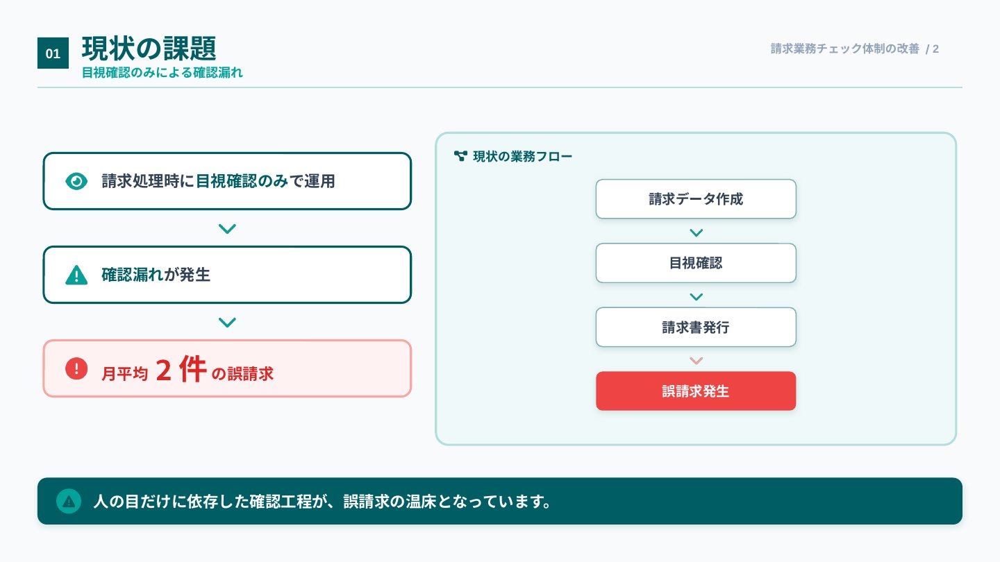
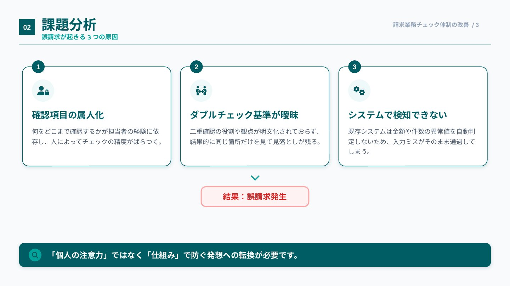
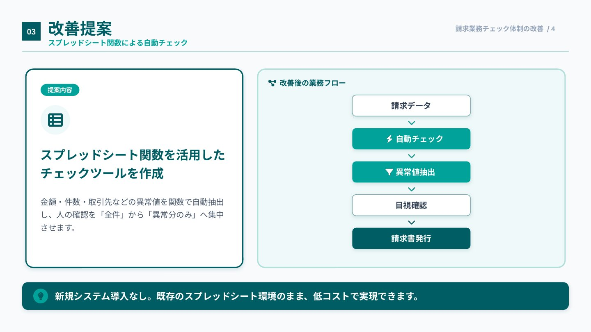
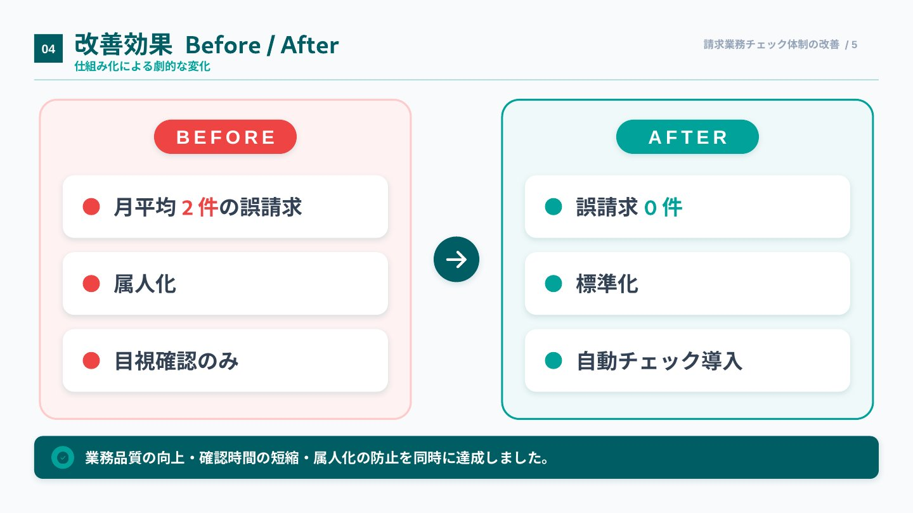
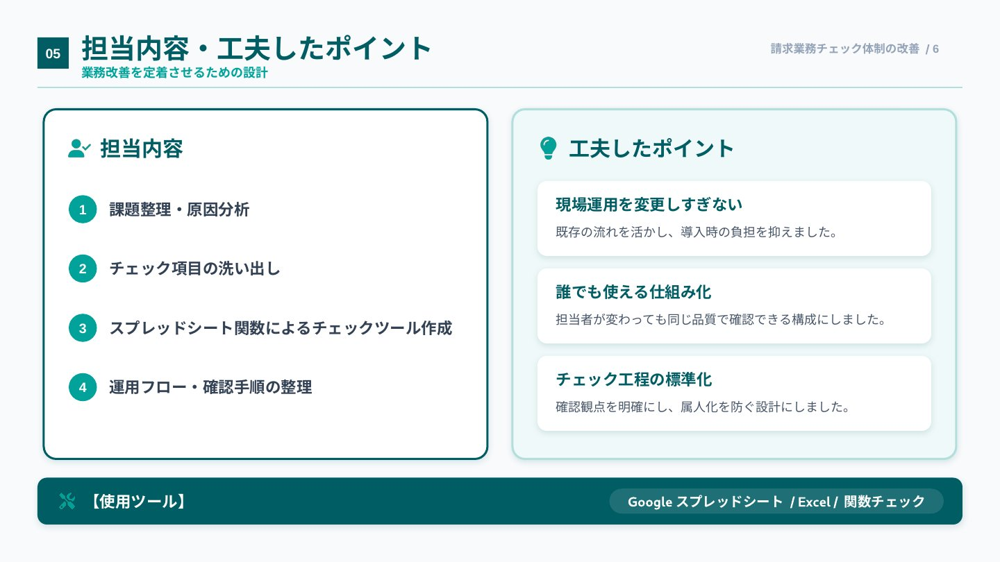

Business Improvement / PowerPoint
請求業務におけるチェック体制の改善
実務経験に基づく業務改善事例を、6枚のPowerPointスライドに再構成しました。
← 業務資料・マニュアルに戻る実務での取り組みと成果
実際の請求業務で、確認漏れによる誤請求が月平均2件発生していました。課題を整理し、AIを活用して数式を検討しながら、異常値を抽出するGoogleスプレッドシートを自ら構築・導入。チェック体制を改善し、誤請求を0件に減らしました。
本資料は実務経験をもとに、課題・原因・施策・成果をポートフォリオ向けに再構成したものです。
Slide Gallery
各スライドを上から順にご覧いただけます。





